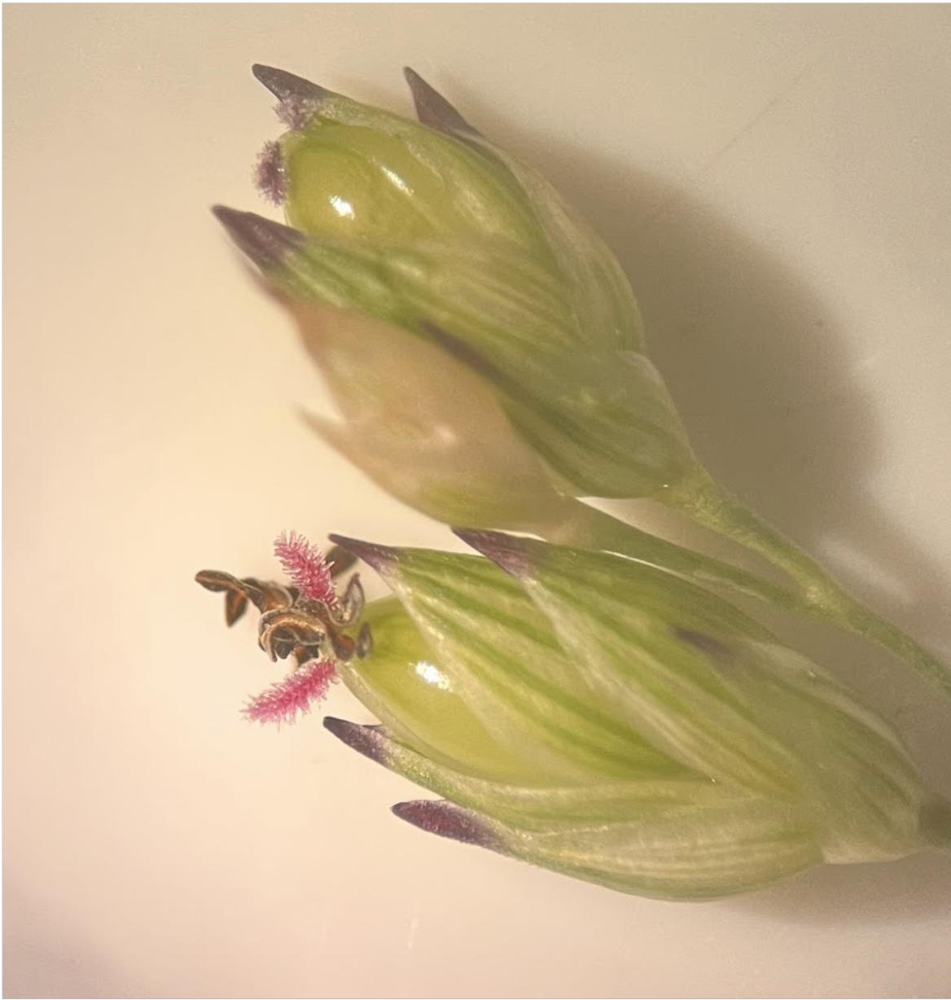
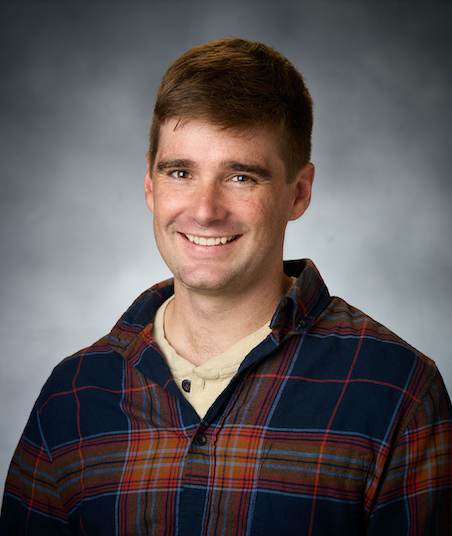

The VanWallendael lab is began at North Carolina State University in January 2024. We are housed in the Horticulture building on main campus within the Weed Science program. We are part of both the Horticulture and Crop and Soil Science Departments. Our lab's focus is on the intersection between evolutionary genetics and weed science. We collaborate widely to use evolutionary concepts to understand weed management, and to use weeds and invasive species as empirical evolutionary models. We study many aspects of weed science, using ecology, evolution, and genetics to understand large-scale ecological patterns and microevolutionary processes.
Artifical selection over many years allowed humans to domesticate crops from wild progenitors. However, this process did not always eradicate the ancestors of modern crops. We study crop plants that have closely-related weedy counterparts as a way to study the processes of domestication and weediness. A focal species for the lab is proso millet Panicum miliaceum, a plant that grows both as a drought-tolerant crop and an invasive weed in many parts of the world. We are uncovering historical diversification in this crop through population genetics and uncovering mechanisms of drought tolerance through comparative genomics.
Since they face extraordinary selection pressures from control efforts, weeds provide some of the best examples of rapid evolution in multicellular organisms. A major focus of the lab is understanding the genetic changes that occur in weed populations, and using these to both predict emerging problem weeds and track rapid evolution in real-time. We will be establishing sites and recruiting collaborators continuously throughout this project.
Plant-fungal relationships in switchgrass: Fungal disease is a major driver of eco-evolutionary patterns in plants. Pathogen success is influenced by the host's genetics, the climate, and even by the presence of other fungi already inhabiting the plant. In switchgrass, we find that different genetic variants are associated with disease in northern versus southern locations. This might be influenced by the complex leaf fungal community, which has its own ecology that changes over the course of the season in a process of ecological succession.
Invasion genetics in knotweed: One of the fundamental tenets of Darwinian evolution is that genetic diversity is essential for adaptation. However, in many cases populations can be quite successful with low diversity. Japanese knotweed is one of the most striking examples of this - the problematic invasive plant spreads mostly asexually, with massive populations of clones in temperate regions worldwide. We found that in North America there may be more genetic diversity than previously assumed, mainly from hybridization with another invasive knotweed. However, this has not resulted in local adaptation across the new range.
All publications:Google Scholar
Dr. Acer VanWallendael is an Assistant Professor at NCSU in the Departments of Horticulture and Crop & Soil Sciences. When Acer was 13 years old, he was cutting down invasive Ailanthus saplings with a machete, and ended up needed 35 stitches in his face after a wayward blow. Ever since, he has focused his research on understanding the evolution and ecology of problematic plants. He received an undergraduate degree from Juniata College, then worked for Americorps through the Nevada Conservation Corps. He earned a PhD from Fordham University, with a dissertation on the genetics and evolution of the invasive plant Japanese knotweed. His postdoc at Michigan State University investigated the genetics of plant-fungal relationships in the biofuel crop switchgrass. He currently lives in Cary, NC with his wife, Beth, and dog, Basil, where he enjoys canoeing, hiking, cycling, and climbing.
I am broadly interested in population genetics and plant breeding. My primary interests are focused on studying the genetic mechanisms that contribute to improving crop yield in a changing world. I received my BS in Biochemistry from the University of New Hampshire. From there I worked in pharmaceuticals where I worked on developing a medication that slowed brain swelling in stroke victims. I am currently studying population genetics in several pervasive weedy species including Amaranthus palmeri, Sorghum halepense, and Cyperus esculentus to better understand their effect on cropping systems and the environment. Outside of work I spend my time gardening, reading, and gaming.
We do not currently have open positions in the lab, but we will post them here and on the NC State Jobs website when funding is available.
At NCSU I am teaching Weed Biology (CS 716)each spring.
Dr. Acer VanWallendael can be contacted at: avanwal@ncsu.edu
Lab code can be found on Github